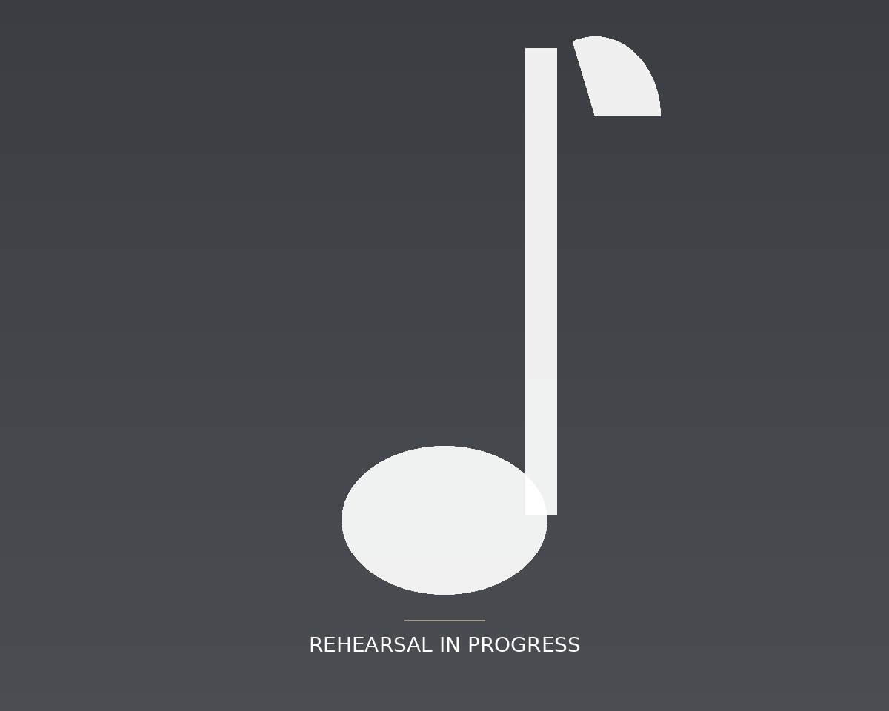

Who We Are
The Dallas Children’s Chorus is the official children’s chorus of the Dallas Symphony Orchestra — a place where young singers train seriously, perform at the highest level, and belong to something larger than themselves.

A rigorous artistic home for young singers
For young singers across North Texas, the Dallas Children’s Chorus is where musicianship is taken seriously — where sight-singing, ear training, vocal technique, and ensemble skills are developed rehearsal by rehearsal, and where young voices grow toward opportunities to perform alongside professional musicians and meet the demands of repertoire written for children’s chorus and symphony orchestra.
Every chorister, from their first rehearsal to their final concert, follows a purposeful path of artistic growth. Through rigorous music education, challenging repertoire, performance experiences that demand excellence, and a community where every singer belongs, DCC choristers develop not only as musicians, but as confident young people and leaders whose experience extends well beyond their years on the risers.
Our Story“Two years ago, I joined the Dallas Symphony Children’s Chorus, which has been one of the most incredible experiences of my life. I’ve met and performed with very talented directors, teachers and fellow singers…I have a desire to continue my studies in fine arts and music, so I can apply that knowledge as an educator of children…”
Ruth Elizabeth González — Hillcrest High School (Dallas, TX), Class of 2026
“I have been in more choirs than I can count on my fingers. No other ensemble I’ve been in can match the bond there is in the DSCC. All of us love singing and music, and the friendships that have followed this shared love make rehearsal the highlight of the week (on a Monday!) for us.”
Ray Taneja — Independence High School (Frisco, TX), Class of 2028
“I will be forever grateful to have the opportunity to share the stage with so many young, talented singers. Being in the DSCC sparked my love for music once again…”
Isabelle Clemente — RL Turner High School (Carrollton, TX), Class of 2026
“Rehearsals are now the highlight of my week…I am extremely grateful for the opportunity to sing with the Dallas Symphony Orchestra and the DSCC. This experience has changed my life, as it has taken my musical knowledge to another level.”
Camila Cruz — Homeschool (Leonard, TX), Class of 2030
Four commitments behind everything we do
From the Dallas Symphony Children’s Chorus to the Dallas Children’s Chorus
Our history is tied directly to the Dallas Symphony Orchestra, and that partnership continues to deepen. Beginning with the 2027/28 season, the Dallas Symphony Children’s Chorus will become the Dallas Children’s Chorus — bringing our community of young singers together under one artistic home, with the same staff and program continuing without change.
Founding of the Dallas Symphony Children’s Chorus
Under the leadership of Kim Noltemy, then President & CEO of the Dallas Symphony Orchestra, the DSO founded the Dallas Symphony Children’s Chorus in 2022 as its children’s chorus, commencing operations with the 2022/23 concert season. Led by Artistic Director Ellie Lin, the DSCC built on the rich history of choral singing in the region, including the Dallas Symphony Chorus’s more than four decades of service. Since its first season, the children’s chorus has regularly performed with the DSO, including the DSO’s annual Christmas Pops concerts and other collaborations of large-scale works.
Growth as the DSO’s Official Children’s Chorus
Over its five seasons under the auspices of the Dallas Symphony Orchestra, the Dallas Symphony Children’s Chorus has collaborated with the DSO on a number of major works. In the 2022/23 season, the DSCC performed Orff’s Carmina Burana with the DSO and Dallas Symphony Chorus. In the 2023/24 season, the children’s chorus performed the world premiere of Andrea Basevi’s Four Poems by Emily Dickinson with the DSO. Most recently, in May 2026, the DSCC performed Mahler’s monumental Symphony No. 8 (“Symphony of a Thousand”) with the DSO, the DSC, and the Baltimore Choral Arts Society, singing in both Latin and German. These exceptional opportunities have allowed DSCC choristers to perform major choral repertoire alongside a world-class symphony orchestra at the highest level while developing musicianship, teamwork, confidence, discipline, and artistic excellence.
Dallas Symphony Children’s Chorus Becomes the Dallas Children’s Chorus
Beginning with the 2027/28 season, the Dallas Symphony Children’s Chorus will become the Dallas Children’s Chorus while continuing as the official children’s chorus of the Dallas Symphony Orchestra. While legally and financially independent, the close, direct affiliation and artistic relationship between the DCC and DSO remain. The DCC will continue to provide a children’s chorus for DSO programming, with choristers continuing to perform with the orchestra as called for by its programming. This collaboration connects rigorous choral education with performance opportunities that would otherwise be unavailable to most young singers.
Ready to see if the DCC is right for your family?
Attend an audition, tour a rehearsal, or simply reach out with questions — we’d love to meet you.